Mobile Smoke Report
Run: 20260428-233743
Status: success
App launched, screenshots and screen recording were captured automatically.
Artifacts
{kind=link}
{kind=link}
Theme Sweep
theme-01-violet-amber-light.png
{kind=link}
theme-02-violet-amber-dark.png
{kind=link}
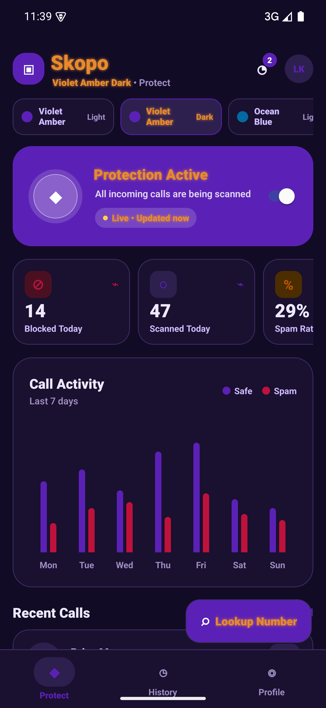
theme-03-ocean-blue-light.png
{kind=link}
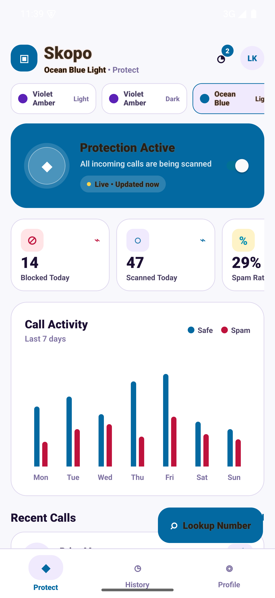
theme-04-ocean-blue-dark.png
{kind=link}
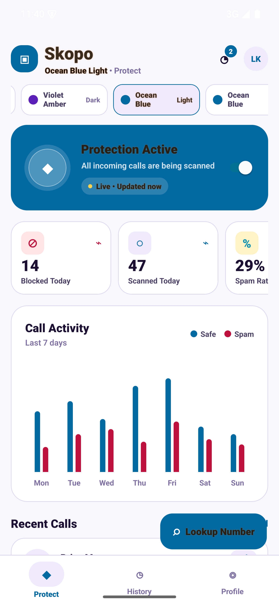
theme-05-rose-gold-light.png
{kind=link}
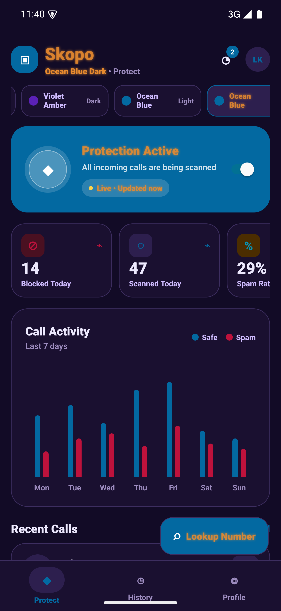
theme-06-rose-gold-dark.png
{kind=link}
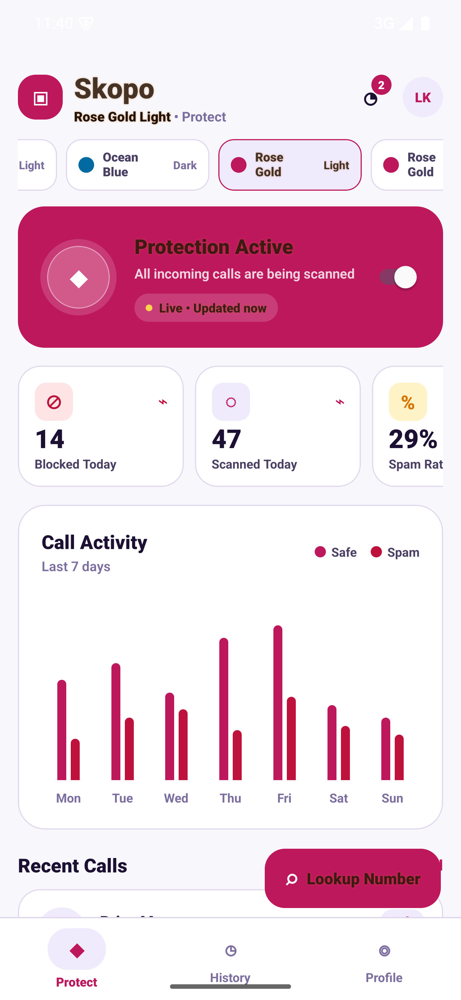
theme-07-forest-green-light.png
{kind=link}
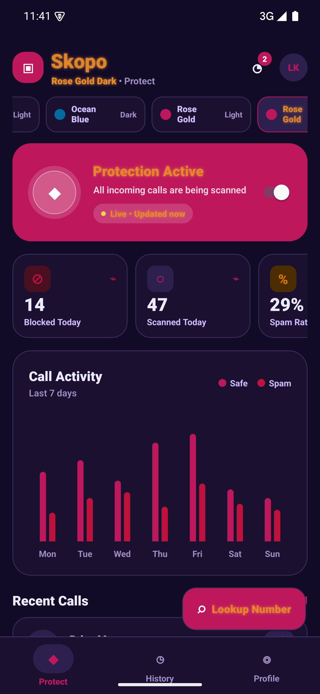
theme-08-forest-green-dark.png
{kind=link}
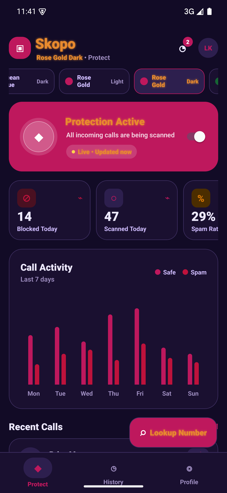
theme-09-midnight-slate-light.png
{kind=link}
theme-10-midnight-slate-dark.png
{kind=link}
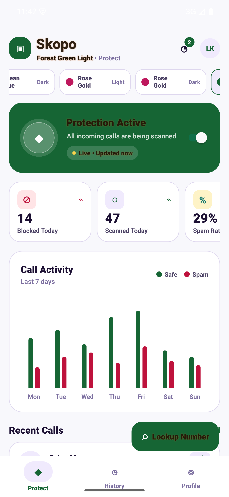
click-history-tab.png
{kind=link}
click-lookup.png
{kind=link}
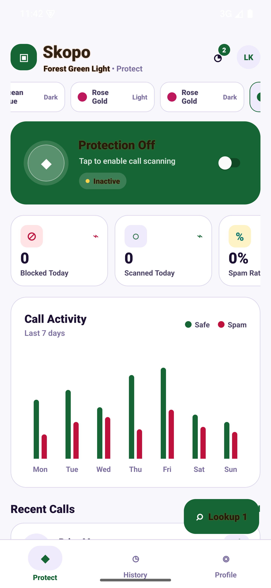
click-profile-tab.png
{kind=link}
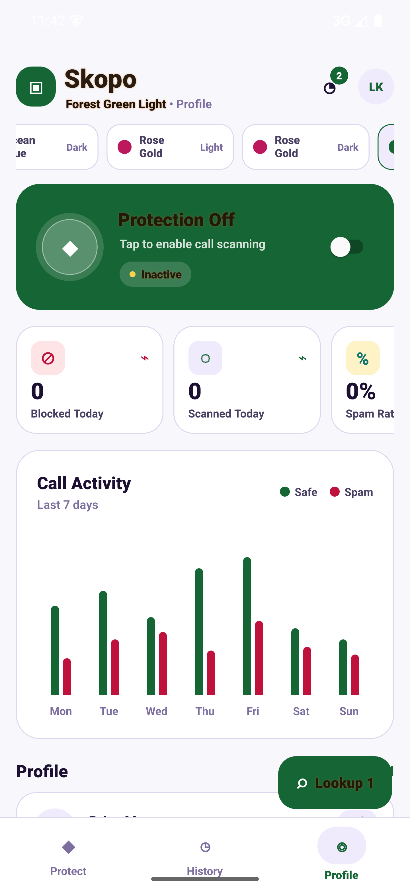
click-protection-toggle.png
{kind=link}
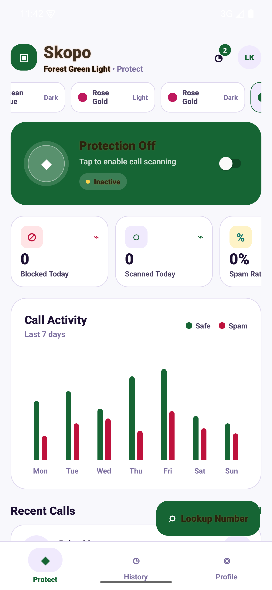
Device
List of devices attached emulator-5554 device product:sdk_gphone64_arm64 model:sdk_gphone64_arm64 device:emu64a transport_id:13
Run Log
> Task :react-native-reanimated:extractDeepLinksForAarRelease UP-TO-DATE
> Task :react-native-reanimated:extractReleaseAnnotations UP-TO-DATE
> Task :react-native-reanimated:mergeReleaseGeneratedProguardFiles UP-TO-DATE
> Task :react-native-reanimated:mergeReleaseConsumerProguardFiles UP-TO-DATE
> Task :react-native-reanimated:mergeReleaseJavaResource UP-TO-DATE
> Task :react-native-reanimated:syncReleaseLibJars UP-TO-DATE
> Task :react-native-reanimated:bundleReleaseLocalLintAar UP-TO-DATE
> Task :react-native-reanimated:writeReleaseLintModelMetadata UP-TO-DATE
> Task :react-native-reanimated:lintVitalAnalyzeRelease UP-TO-DATE
> Task :react-native-reanimated:generateReleaseLintVitalModel UP-TO-DATE
> Task :react-native-reanimated:copyReleaseJniLibsProjectOnly UP-TO-DATE
> Task :react-native-gesture-handler:configureCMakeRelWithDebInfo[arm64-v8a]
> Task :react-native-gesture-handler:buildCMakeRelWithDebInfo[arm64-v8a]
> Task :react-native-gesture-handler:configureCMakeRelWithDebInfo[armeabi-v7a]
> Task :react-native-gesture-handler:buildCMakeRelWithDebInfo[armeabi-v7a]
> Task :react-native-gesture-handler:configureCMakeRelWithDebInfo[x86]
> Task :react-native-gesture-handler:buildCMakeRelWithDebInfo[x86]
> Task :react-native-gesture-handler:configureCMakeRelWithDebInfo[x86_64]
> Task :react-native-gesture-handler:buildCMakeRelWithDebInfo[x86_64]
> Task :react-native-gesture-handler:mergeReleaseNativeLibs UP-TO-DATE
> Task :react-native-gesture-handler:stripReleaseDebugSymbols UP-TO-DATE
> Task :react-native-gesture-handler:copyReleaseJniLibsProjectAndLocalJars UP-TO-DATE
> Task :react-native-gesture-handler:bundleReleaseLocalLintAar UP-TO-DATE
> Task :react-native-gesture-handler:lintVitalAnalyzeRelease UP-TO-DATE
> Task :react-native-gesture-handler:copyReleaseJniLibsProjectOnly UP-TO-DATE
> Task :app:createBundleReleaseJsAndAssets
Starting Metro Bundler
warning: Bundler cache is empty, rebuilding (this may take a minute)
Android node_modules/expo-router/entry.js ░░░░░░░░░░░░░░░░ 0.0% (0/1)
| (node:22153) Warning: The 'NO_COLOR' env is ignored due to the 'FORCE_COLOR' env being set.
| (Use `node --trace-warnings ...` to show where the warning was created)
| (node:22154) Warning: The 'NO_COLOR' env is ignored due to the 'FORCE_COLOR' env being set.
| (Use `node --trace-warnings ...` to show where the warning was created)
Android node_modules/expo-router/entry.js ▓▓▓▓░░░░░░░░░░░░ 28.9% (172/320)
Android node_modules/expo-router/entry.js ▓▓▓▓▓▓▓▓▓░░░░░░░ 59.2% (530/689)
Android node_modules/expo-router/entry.js ▓▓▓▓▓▓▓▓▓▓░░░░░░ 64.0% (556/695)
Android node_modules/expo-router/entry.js ▓▓▓▓▓▓▓▓▓▓▓░░░░░ 72.5% (613/721)
Android node_modules/expo-router/entry.js ▓▓▓▓▓▓▓▓▓▓▓▓░░░░ 75.8% ( 799/1170)
Android node_modules/expo-router/entry.js ▓▓▓▓▓▓▓▓▓▓▓▓░░░░ 80.8% (1180/1313)
Android node_modules/expo-router/entry.js ▓▓▓▓▓▓▓▓▓▓▓▓▓░░░ 85.3% (1451/1670)
Android node_modules/expo-router/entry.js ▓▓▓▓▓▓▓▓▓▓▓▓▓░░░ 85.3% (1617/1777)
Android node_modules/expo-router/entry.js ▓▓▓▓▓▓▓▓▓▓▓▓▓▓▓░ 99.9% (1984/1984)
Android Bundled 31973ms node_modules/expo-router/entry.js (1984 modules)
Writing bundle output to: /Users/apple/Documents/Codex/2026-04-27/i-am-builing-an-app-that/frontend/android/app/build/generated/assets/createBundleReleaseJsAndAssets/index.android.bundle
Writing sourcemap output to: /Users/apple/Documents/Codex/2026-04-27/i-am-builing-an-app-that/frontend/android/app/build/intermediates/sourcemaps/react/release/index.android.bundle.packager.map
Copying 47 asset files
Done writing bundle output
Done writing sourcemap output
> Task :app:preBuild
> Task :app:preReleaseBuild
> Task :app:checkReleaseDuplicateClasses UP-TO-DATE
> Task :app:generateReleaseBuildConfig UP-TO-DATE
> Task :app:checkReleaseAarMetadata UP-TO-DATE
> Task :app:generateReleaseResValues UP-TO-DATE
> Task :app:mapReleaseSourceSetPaths UP-TO-DATE
> Task :app:generateReleaseResources UP-TO-DATE
> Task :app:mergeReleaseResources UP-TO-DATE
> Task :app:packageReleaseResources UP-TO-DATE
> Task :app:parseReleaseLocalResources UP-TO-DATE
> Task :app:createReleaseCompatibleScreenManifests UP-TO-DATE
> Task :app:extractDeepLinksRelease UP-TO-DATE
> Task :app:processReleaseMainManifest UP-TO-DATE
> Task :app:processReleaseManifest UP-TO-DATE
> Task :app:processReleaseManifestForPackage UP-TO-DATE
> Task :app:processReleaseResources UP-TO-DATE
> Task :app:compileReleaseKotlin UP-TO-DATE
> Task :app:javaPreCompileRelease UP-TO-DATE
> Task :app:compileReleaseJavaWithJavac UP-TO-DATE
> Task :app:dexBuilderRelease UP-TO-DATE
> Task :app:desugarReleaseFileDependencies UP-TO-DATE
> Task :app:mergeReleaseStartupProfile UP-TO-DATE
> Task :app:mergeExtDexRelease UP-TO-DATE
> Task :app:mergeDexRelease UP-TO-DATE
> Task :app:mergeReleaseArtProfile UP-TO-DATE
> Task :app:mergeReleaseGlobalSynthetics UP-TO-DATE
> Task :app:compileReleaseArtProfile UP-TO-DATE
> Task :app:mergeReleaseShaders UP-TO-DATE
> Task :app:compileReleaseShaders NO-SOURCE
> Task :app:generateReleaseAssets UP-TO-DATE
> Task :app:mergeReleaseAssets
> Task :app:extractReleaseVersionControlInfo UP-TO-DATE
> Task :app:extractProguardFiles UP-TO-DATE
> Task :app:generateReleaseLintVitalReportModel UP-TO-DATE
> Task :app:compressReleaseAssets
> Task :app:lintVitalAnalyzeRelease UP-TO-DATE
> Task :app:lintVitalReportRelease UP-TO-DATE
> Task :app:lintVitalRelease
> Task :app:processReleaseJavaRes UP-TO-DATE
> Task :app:mergeReleaseJavaResource UP-TO-DATE
> Task :app:optimizeReleaseResources UP-TO-DATE
> Task :app:collectReleaseDependencies UP-TO-DATE
> Task :app:sdkReleaseDependencyData UP-TO-DATE
> Task :app:configureCMakeRelWithDebInfo[arm64-v8a]
> Task :app:buildCMakeRelWithDebInfo[arm64-v8a]
> Task :app:configureCMakeRelWithDebInfo[armeabi-v7a]
> Task :app:buildCMakeRelWithDebInfo[armeabi-v7a]
> Task :app:configureCMakeRelWithDebInfo[x86]
> Task :app:buildCMakeRelWithDebInfo[x86]
> Task :app:configureCMakeRelWithDebInfo[x86_64]
> Task :app:buildCMakeRelWithDebInfo[x86_64]
> Task :app:mergeReleaseJniLibFolders UP-TO-DATE
> Task :app:mergeReleaseNativeLibs UP-TO-DATE
> Task :app:stripReleaseDebugSymbols UP-TO-DATE
> Task :app:validateSigningRelease UP-TO-DATE
> Task :app:writeReleaseAppMetadata UP-TO-DATE
> Task :app:writeReleaseSigningConfigVersions UP-TO-DATE
> Task :app:packageRelease
> Task :app:createReleaseApkListingFileRedirect UP-TO-DATE
> Task :app:installRelease
Installing APK 'app-release.apk, app-release.dm' on 's25_ultra_like(AVD) - 15' for :app:release
Installed on 1 device.
[Incubating] Problems report is available at: file:///Users/apple/Documents/Codex/2026-04-27/i-am-builing-an-app-that/frontend/android/build/reports/problems/problems-report.html
Deprecated Gradle features were used in this build, making it incompatible with Gradle 9.0.
You can use '--warning-mode all' to show the individual deprecation warnings and determine if they come from your own scripts or plugins.
For more on this, please refer to https://docs.gradle.org/8.14.3/userguide/command_line_interface.html#sec:command_line_warnings in the Gradle documentation.
BUILD SUCCESSFUL in 59s
603 actionable tasks: 60 executed, 543 up-to-date
Clearing logs and launching com.anonymous.astroquest...
Starting: Intent { cmp=com.anonymous.astroquest/.MainActivity }
Launched with am start.
System ANR dialog detected; tapping Wait at 720 1764.
Capturing launch screenshot...
Running 10-theme coordinate click/display sweep...
Tapping theme coordinate '01-violet-amber-light' at 280 514.
System ANR dialog detected; tapping Wait at 720 1764.
Tapping theme coordinate '02-violet-amber-dark' at 756 514.
System ANR dialog detected; tapping Wait at 720 1764.
Tapping theme coordinate '03-ocean-blue-light' at 1196 514.
System ANR dialog detected; tapping Wait at 720 1764.
Tapping theme coordinate '04-ocean-blue-dark' at 938 514.
System ANR dialog detected; tapping Wait at 720 1764.
Tapping theme coordinate '05-rose-gold-light' at 1287 514.
System ANR dialog detected; tapping Wait at 720 1764.
Tapping theme coordinate '06-rose-gold-dark' at 1050 514.
System ANR dialog detected; tapping Wait at 720 1764.
Tapping theme coordinate '07-forest-green-light' at 1343 514.
System ANR dialog detected; tapping Wait at 720 1764.
Tapping theme coordinate '08-forest-green-dark' at 1231 514.
System ANR dialog detected; tapping Wait at 720 1764.
Tapping theme coordinate '09-midnight-slate-light' at 1062 514.
System ANR dialog detected; tapping Wait at 720 1764.
Tapping theme coordinate '10-midnight-slate-dark' at 1349 514.
System ANR dialog detected; tapping Wait at 720 1764.
Tapping protection toggle at 1231 864.
Tapping lookup action at 1098 2737.
Tapping History tab at 720 2992.
Tapping Profile tab at 1200 2992.
Recording screen for 8s...
System ANR dialog detected; tapping Wait at 720 1764.
Capturing final screenshot...
System ANR dialog detected; tapping Wait at 720 1764.
Collecting focused activity and filtered logs...